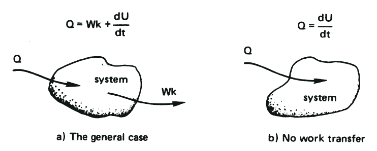
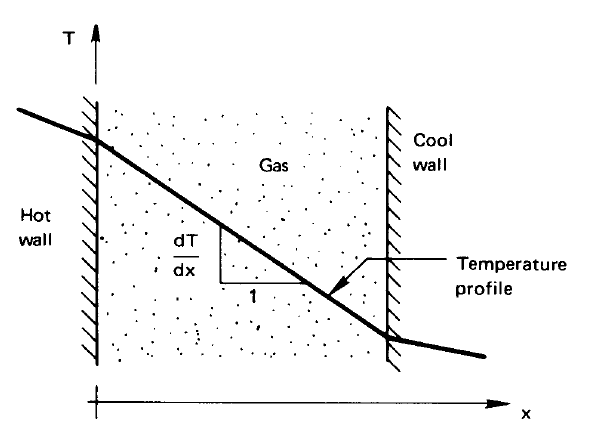
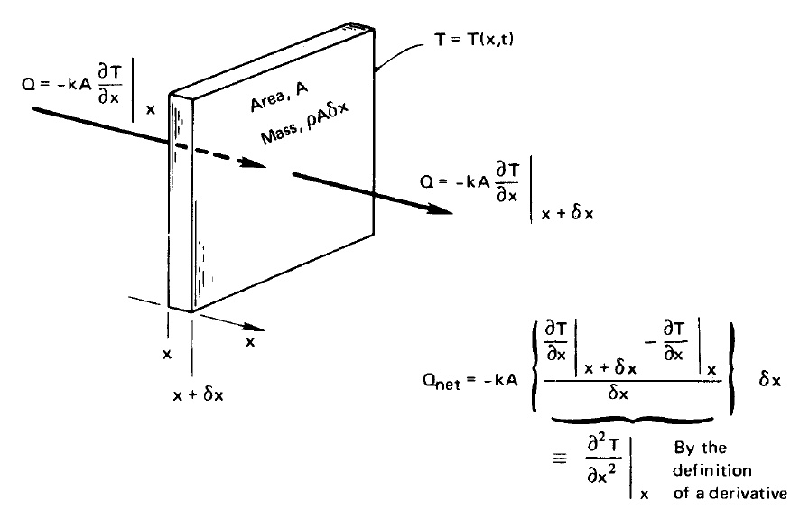
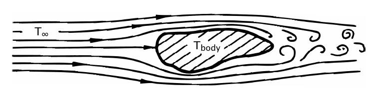
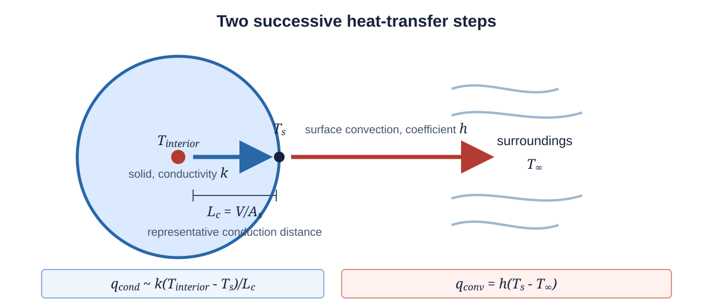
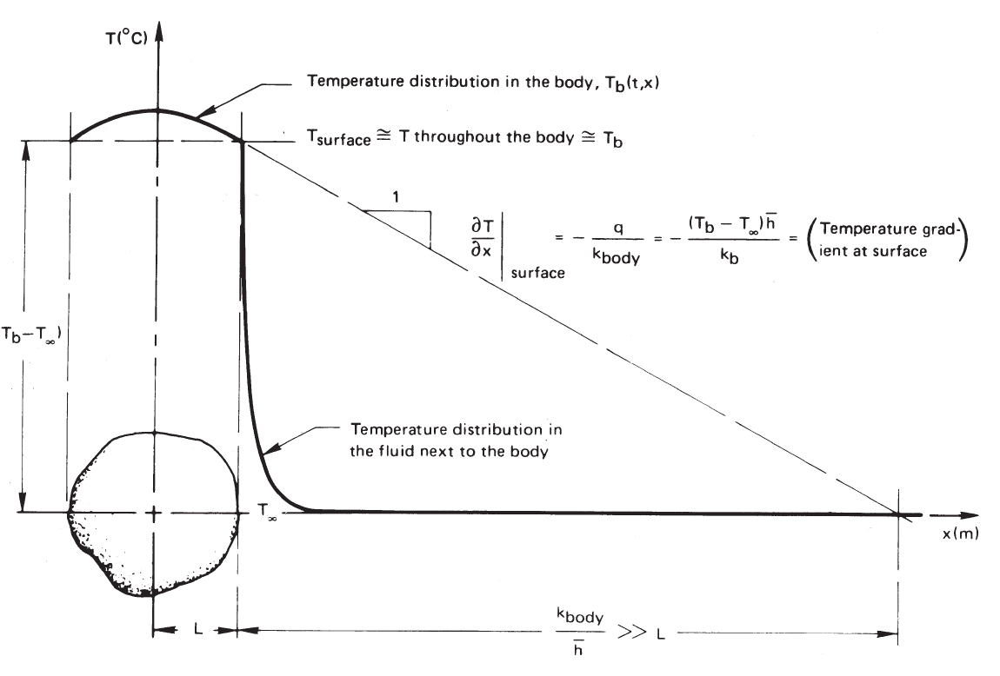

Module 7, Part I: Thermal Transport Foundations¶
Module 7 has three linked parts. This first part connects the lumped thermal models from Module 6 to the spatial models needed for the long-cylinder experiment. Continue with Part II: Finite And Infinite Rod Theory, followed by Part III: Rod Instrument And Stationary Fin.
Module 7 Roadmap¶
The three parts form one model-building and model-testing sequence:
| Part | Central question | What you do | Where it is assessed |
|---|---|---|---|
| Part I: foundations | How do a constitutive law and conservation produce a temperature equation? | Interpret Fourier's law, derive the heat equation, and establish the Biot test. | A4 Part 1 and selected C5 questions |
| Part II: rod theory | What stationary profile follows from axial conduction, side cooling, and the end conditions? | Derive the finite-rod solution, its semi-infinite limit, and the two model-validity checks. | A4 Parts 2-4 and selected C5 questions |
| Part III: experiment | Do the assumptions and predicted profiles describe the course rod? | Cross-calibrate the sensors, measure the transient and stationary profiles, compare models, and inspect residuals. | C5, the formative stationary-fin record, and later C6 evidence |
Sections 1-5 and What To Prepare are the required route through Part I. The unified-transport comparison, electrical-transient sidebar, and optional nondimensional derivation provide broader context but are not additional assignments.
Learning Objectives¶
The objectives below are listed in priority order. By the end of Module 7, Part I, you should be able to:
- Explain Fourier's law as a phenomenological constitutive relation and combine it with local conservation of energy to derive the one-dimensional heat equation.
- Distinguish temperature, heat-transfer rate, and heat flux, and interpret the units and physical meanings of thermal conductivity \(k\), thermal diffusivity \(\alpha\), and the convection coefficient \(h\). Apply Fourier's law to calculate a temperature difference from a prescribed heat flux.
- Derive and interpret the Biot number \(\mathrm{Bi}=hL_c/k\), with \(L_c=V/A_s\), and use it to decide whether the lumped model assumption is valid, e.g. the internal temperature variation may be neglected.
- Distinguish the two independent approximations required for the course rod: neglecting the finite end and neglecting radial temperature variation.
Module 7 Vocabulary And Notation¶
These foundational terms are used throughout all three parts of Module 7. Parts II and III add vocabulary specific to the fin model and the experiment.
| Term | Meaning |
|---|---|
| Temperature, \(T\) | A local thermal state variable, measured in kelvin or degrees Celsius. Temperature differences drive heat transfer. |
| Heat, \(Q\) | Energy transferred across a system boundary because of a temperature difference, measured in joules. |
| Heat-transfer rate or heat current, \(\dot Q\) | Heat transferred per unit time, measured in watts. |
| Heat flux, \(\mathbf q\) or \(q_x\) | Heat-transfer rate per unit area, measured in W/m\(^2\). |
| Thermal conductivity, \(k\) | A material property relating conductive heat flux to temperature gradient through Fourier's law; units W/(m K). |
| Specific heat, \(c\) | Energy needed per unit mass per degree of temperature rise; units J/(kg K). The volumetric heat capacity is \(\rho c\), and a body of mass \(m\) has thermal capacitance \(mc\). |
| Thermal diffusivity, \(\alpha=k/(\rho c)\) | The material property governing how rapidly a temperature disturbance spreads; units m\(^2\)/s. |
| Thermal resistance, \(R_{\mathrm{th}}\) | A geometry-dependent ratio \(\Delta T/\dot Q\), measured in K/W. For uniform one-dimensional conduction, \(R_{\mathrm{th}}=L/(kA)\). |
| Constitutive law | A material-response relation connecting a flux to a driving field, such as Fourier's law \(\mathbf q=-k\nabla T\). |
| Conservation law | A balance stating that accumulation equals inflow minus outflow plus generation. Conservation of energy and a constitutive law together produce the heat equation. |
| Surface heat-transfer coefficient, \(h\) | The coefficient in Newton's law of cooling, \(q=h(T_s-T_\infty)\); units W/(m\(^2\) K). It depends on the fluid, flow, and geometry. |
| Characteristic length, \(L_c=V/A_s\) | The representative internal conduction distance used in the Biot number. |
| Biot number, \(\mathrm{Bi}=hL_c/k\) | The ratio of internal conduction resistance to surface convection resistance. Small \(\mathrm{Bi}\) supports a nearly uniform internal temperature. |
| Lumped-capacitance model | A model that assigns one temperature to an entire object; it requires sufficiently small internal temperature variation. |
Read selectively in Lienhard, A Heat Transfer Textbook, Section 1.3, pp. 11-26. Focus on Fourier's Law, the derivation of the heat conduction equation, convection/lumped cooling, dimensional analysis, the Biot number, and Fig. 1.10.
This bridge follows the order of Lienhard Section 1.3:
| Lienhard reading | How to read it |
|---|---|
| pp. 11-13, Fourier's Law | Read carefully. This is the law that turns a temperature gradient into a heat flux. |
| pp. 14-16, thermal conductivity and Example 1.2 | Skim for scale. Notice how \(k\) controls the temperature gradient needed for a given heat flux. |
| pp. 17-18, one-dimensional heat conduction equation | Read slowly. This is the derivation core of the bridge. |
| pp. 19-21, convection and Newton's law of cooling | Read for the meaning of \(h\), the heat transfer coefficient. |
| pp. 21-24, lumped capacity, Fig. 1.10, and Biot number | Read carefully. This explains when a one-temperature model is acceptable. |
| pp. 24-26, thermocouple example | Skim for how Lienhard checks the Biot number assumption in a real calculation. |
Notation. Throughout the course, \(c\) denotes the specific heat of the solid and \(h\) denotes the surface heat-transfer coefficient. Lienhard and other sources may write the same solid specific heat as \(c_p\). We use \(c\) because the distinction between \(c_p\) and \(c_v\) is negligible for the incompressible solids studied here. Lowercase \(h\) also distinguishes the surface coefficient, in W/(m\(^2\) K), from a total lumped thermal conductance, which has units W/K.
Why This Bridge Exists¶
Module 6 used lumped models: one temperature for one object, or two temperatures for two coupled objects. That works when internal temperature gradients are small enough to ignore. The long cylinder is different. Its temperature depends on position as well as time, so we need a model that can describe heat flowing along the rod.
The bridge has three questions:
- What law tells us how heat flows down a temperature gradient?
- How does conservation of energy turn that law into a differential equation?
- When is it reasonable to ignore spatial temperature gradients?
1. Heat And Temperature¶
Heat and temperature are related, but they are not the same quantity. Temperature describes the thermal state of a system. Heat is energy transferred across the system boundary because of a temperature difference.
Analogy: Heat Flow, Water Flow, And Electrical Current¶
One useful analogy is water flowing between reservoirs at different heights. Water height, or equivalently gravitational pressure head, is analogous to temperature: it is a driving potential, not the quantity that flows. A difference in height drives a volume-flow rate of water; a difference in temperature drives a heat-transfer rate. In this course, we will often call \(\dot Q\) the heat current: an energy-current rate measured in watts. The familiar electrical version is Ohm's law: a voltage difference drives an electrical current. In all three systems, a long or narrow path opposes the flow.
| Heat transfer | Gravity-driven water flow | Electrical current |
|---|---|---|
| Temperature difference, \(\Delta T\) | Height difference, \(\Delta h\), or pressure difference, \(\Delta p\) | Voltage difference, \(\Delta V\) |
| Heat current (heat-transfer rate), \(\dot Q\) (W) | Volume-flow rate, \(\dot V\) (m\(^3\)/s) | Current, \(I\) (A) |
| Thermal resistance, \(R_{\mathrm{th}}\) (K/W) | Hydraulic resistance, \(R_{\mathrm{hyd}}\) (Pa s/m\(^3\)) | Electrical resistance, \(R\) (\(\Omega\)) |
| Thermal capacitance, \(mc\) (J/K) | Storage capacity of a tank | Electrical capacitance, \(C\) (F) |
The three steady-flow laws have the same mathematical form:
For steady one-dimensional heat conduction through a uniform material,
Here \(L\) is the length of the conduction path, \(A\) is its cross-sectional area perpendicular to the heat flow, and \(k\) is the thermal conductivity of the material. Section 2 explains these quantities more fully and shows how this geometry-dependent resistance follows from Fourier's local heat-flux law.
For a reservoir-height difference \(\Delta h\), gravity produces a pressure difference \(\Delta p=\rho g\Delta h\). For fully developed laminar flow of an incompressible Newtonian fluid through a straight circular pipe,
Ohm's law is the corresponding electrical relation:
The corresponding storage, or capacitance, laws describe what happens when the driving potential changes in time:
Here \(A_{\mathrm{tank}}\) is the horizontal cross-sectional area of a tank: it determines how much water must enter to raise its water level by a given amount. Similarly, \(mc\) determines how much energy must enter to raise the temperature of a body by a given amount. These forms assume that \(m\), \(c\), \(A_{\mathrm{tank}}\), and \(C\) are constant over the range considered.
Thus \(C_{\mathrm{th}}=mc\) is the thermal analogue of electrical capacitance \(C\). The analogy is useful, but limited: a temperature difference is a thermal potential that drives heat current. Heat is not a substance stored in an object; it is energy transferred across the object boundary because of a temperature difference. The transferred energy changes the object's internal energy \(U\), which is stored in the object. Thermal capacitance relates heat current to the rate of temperature change, \(\dot Q=C_{\mathrm{th}}\,dT/dt\), just as electrical capacitance relates current to the rate of voltage change. A larger thermal mass requires more transferred energy to produce a given temperature change.

Lienhard and Lienhard, Fig. 1.1, textbook p. 7: First-Law energy balance for a closed system.
The First Law of Thermodynamics is conservation of energy. With Lienhard's sign convention, the rate at which heat enters a closed system equals the rate at which the system does compression work plus the rate at which its internal energy increases.
For a closed system with compression work, Lienhard Eq. (1.2a) is
For the incompressible solids and liquids used in this course, the volume-work term is normally absent and the specific heats at constant pressure and volume may be represented by \(c\). Equation (1.3) then becomes
This equation does not say that heat and temperature are identical. It says that a net heat-transfer rate changes the internal energy and therefore changes temperature at a rate controlled by the thermal mass \(mc\).
2. Heat Conduction And Fourier's Law¶
Use Lienhard Section 1.3, "Modes of heat transfer," pp. 11-27, as the source for this section.
This is the first major idea in the pp. 11-26 reading span.
| Read this in Lienhard | What to take from it |
|---|---|
| Section 1.3, p. 11, line beginning "Fourier's law," through Eq. (1.8) | \(q\) is heat flux, \(k\) is thermal conductivity, and the temperature gradient drives conduction. |
| Section 1.3, p. 11, line beginning "The heat flux is a vector quantity" | The minus sign is a direction statement: heat flows from higher temperature to lower temperature. |
| Section 1.3, p. 13, line beginning "The direction of heat flow," through Eq. (1.9) | In one-dimensional steady conduction, Lienhard often rewrites the law with positive \(\Delta T\) and positive \(q\). |
| Section 1.3, p. 13, line beginning "Notice that," through Eq. (1.10) | For the same heat flux, a material with larger \(k\) needs a smaller temperature gradient. |
For an isotropic material, Fourier's Law has the general form
The heat-flux vector \(\mathbf q\) points opposite the temperature gradient: heat flows from hot regions toward cold regions. In one dimension, this becomes
Here \(q_x\) is heat flux in W/m\(^2\), \(k\) is thermal conductivity in W/(m K), and \(\partial T/\partial x\) is the temperature gradient in K/m. The minus sign matters: heat flows in the direction of decreasing temperature.
Lienhard writes \(dT/dx\) when discussing one-dimensional steady conduction. We use \(\partial T/\partial x\) because the long-cylinder experiment will have a temperature \(T(x,t)\) that can depend on both position and time.
For a rod with cross-sectional area \(A\), the heat-flow rate is
Fourier's law is fundamentally a flux law. The heat flux \(q_x\) is the heat-transfer rate per unit area, whereas the heat current \(\dot Q_x=Aq_x\) is the total heat-transfer rate through a specified cross section. The thermal conductivity \(k\) is independent of the sample geometry: it is a property of the material, although it can depend on temperature, composition, and direction in an anisotropic material.
Thermal resistance is different. For steady one-dimensional conduction through a uniform sample of length \(L\), constant area \(A\), and constant \(k\), integrating Fourier's law gives
Thus \(R_{\mathrm{th}}\) is not a material property. It is the geometry-dependent lumped parameter obtained when the continuous flux law is applied to, or discretized over, a finite piece of material. Doubling \(L\) doubles its thermal resistance, while doubling \(A\) halves it; neither change alters \(k\). This should remind you of electrical resistance: resistances in series add directly, whereas resistances in parallel combine through their reciprocals.
For this course, the key idea is not the symbol manipulation. The key idea is that a temperature gradient causes a heat current.

Lienhard and Lienhard, Fig. 1.5, textbook p. 14: a temperature gradient and the corresponding direction of conductive heat flow.
Why Use A Phenomenological Constitutive Law?¶
The relation just introduced is a phenomenological constitutive law. Conservation of energy tells us that local energy accumulation must equal heat flowing in minus heat flowing out, plus any heat generated, but conservation alone does not tell us what heat flux a given temperature field produces. Fourier's law supplies that second relation.
Its form reflects four observations: a uniform temperature produces no conductive flux; the flux points opposite the temperature gradient; the local flux is determined primarily by the nearby temperature field; and, near thermal equilibrium, the first approximation is a response proportional to the driving gradient.
Fourier's law is a constitutive law because it specifies how a particular material responds. It is phenomenological because it summarizes measured macroscopic behavior without deriving that behavior from the microscopic motion of phonons, electrons, or molecules. The thermal conductivity \(k\) must be measured. It tells how much heat flux the material carries for a given temperature gradient.
The proportionality is a linear-response approximation. For an anisotropic material, \(k\) can be a tensor; for large gradients or very short length and time scales, the response can be nonlinear or nonlocal. Fourier's law is the appropriate first model when those complications are unimportant.
Unified Transport Equations¶
Fourier's law is one member of a broad family of phenomenological constitutive laws for linear transport. The common mathematical structure is easiest to see for steady transport with no local sources. A gradient of a driving field produces a flux; conservation says that the flux has zero divergence; and substituting the constitutive law into the conservation law produces the field equation.
Steady, Source-Free Transport¶
| Phenomenon | Constitutive flux law | Steady, source-free conservation | Field equation after substitution |
|---|---|---|---|
| Heat conduction | \(\mathbf q=-k\nabla T\) | \(\nabla\!\cdot\mathbf q=0\) | \(\nabla\!\cdot(k\nabla T)=0\) |
| Molecular diffusion | \(\mathbf J_m=-D\nabla c\) | \(\nabla\!\cdot\mathbf J_m=0\) | \(\nabla\!\cdot(D\nabla c)=0\) |
| Electrical conduction | \(\mathbf J=\sigma\mathbf E=-\sigma\nabla\phi\) | \(\nabla\!\cdot\mathbf J=0\) | \(\nabla\!\cdot(\sigma\nabla\phi)=0\) |
For constant \(k\), \(D\), and \(\sigma\), respectively, these become
Transient Transport¶
For a transient problem, conservation relates the divergence of the flux to the rate of change of a stored quantity. Substitution gives
| Phenomenon | Stored quantity per unit volume | Transient conservation law | Result after substituting the flux law |
|---|---|---|---|
| Heat conduction | Thermal energy density, with \(\partial u_{\mathrm{th}}/\partial T=\rho c\) | \(\partial u_{\mathrm{th}}/\partial t=-\nabla\!\cdot\mathbf q+\dot q_v\) | \(\rho c\,\partial T/\partial t=\nabla\!\cdot(k\nabla T)+\dot q_v\) |
| Molecular diffusion | Molecular concentration \(c\) | \(\partial c/\partial t=-\nabla\!\cdot\mathbf J_m+s\) | \(\partial c/\partial t=\nabla\!\cdot(D\nabla c)+s\) |
| Electrical conduction | Charge density \(\rho_e\) | \(\partial\rho_e/\partial t=-\nabla\!\cdot\mathbf J\) | \(\partial\rho_e/\partial t=\nabla\!\cdot(\sigma\nabla\phi)\) |
Here \(u_{\mathrm{th}}\) is the thermal energy stored per unit volume. For constant density \(\rho\) and specific heat \(c\), raising the temperature by \(dT\) changes that stored energy density by
The chain rule therefore gives the accumulation term in the heat equation:
The units provide a useful check: \(\rho c\) has units of J/(m\(^3\) K), so multiplying it by \(\partial T/\partial t\) gives W/m\(^3\), the rate of thermal-energy accumulation per unit volume.
The first two rows produce closed diffusion equations for the driving fields. Local thermal energy storage is related directly to temperature through the volumetric heat capacity \(\rho c\), while the stored molecular quantity is the concentration \(c\) itself. Consequently, conservation plus the constitutive flux law gives an equation containing only \(T\), or only \(c\).
Electrical conduction has the same steady, source-free field equation, but its transient behavior is not generally a diffusion equation for potential. The conserved quantity is charge density \(\rho_e\), not potential \(\phi\). The sidebar develops this distinction and its connection to electrostatics.
Sidebar: Why electrical potential behaves differently in a transient
Electrical conduction is different. Electrical current is driven by the potential gradient, but the conserved stored quantity is charge density \(\rho_e\), not potential \(\phi\). The last entry in the table therefore contains both \(\rho_e\) and \(\phi\); charge conservation and Ohm's law alone do not make a closed diffusion equation for electrical potential. Gauss's law and the permittivity relate charge density to the electric field, while the geometry and boundary conditions determine capacitance and the potential.
For example, in a uniform conductor with constant conductivity \(\sigma\) and permittivity \(\epsilon\), Gauss's law gives \(\nabla\!\cdot\mathbf E=\rho_e/\epsilon\). Combining this with \(\mathbf J=\sigma\mathbf E\) and charge conservation gives
This is charge relaxation, not spatial diffusion of \(\phi\). Excess charge in the bulk relaxes toward surfaces, and the potential at each instant is determined by the corresponding electrostatic boundary-value problem. The familiar transient voltage in an \(RC\) circuit comes from charge stored on capacitors and therefore depends on geometry as well as material properties. This is why electrical potential is most directly analogous to temperature and concentration in the steady table.
Electrostatics uses a related field-source equation. Gauss's law says that charge is the source of electric field. In vacuum,
Thus, with \(\mathbf E=-\nabla\phi\), the electrostatic potential obeys Poisson's equation,
In matter, the more general statement is \(\nabla\!\cdot\mathbf D=\rho_{\mathrm{free}}\), where \(\mathbf D=\epsilon\mathbf E\) for a simple linear dielectric. In a region with no charge, electrostatics gives Laplace's equation, \(\nabla^2\phi=0\).
The closest thermal parallel is steady conduction. With volumetric heat generation \(\dot q_v\), a uniform material obeys
without internal generation it obeys \(\nabla^2T=0\). By contrast, the time-dependent heat and molecular-diffusion equations describe fields that smooth out over time. This distinction will matter when we move from the steady finite-rod model to the time-dependent Angstrom experiment.
Here \(\mathbf q\) is heat flux in W/m\(^2\), \(\mathbf J_m\) is molecular flux, \(\mathbf J\) is electrical current density in A/m\(^2\), and \(c\) in the molecular-diffusion row is concentration. The \(c\) in \(\rho c\) is specific heat; the symbols coincide but represent different physical quantities. The source \(\dot q_v\) is heat generated per unit volume, whereas \(s\) is the net rate at which molecules are added per unit volume.
3. One-Dimensional Conduction: From Energy Balance To The Heat Equation¶
Use Lienhard Section 1.3, pp. 17-18 (PDF pp. 31-32), beginning with "One-dimensional heat conduction equation," and Fig. 1.8. Read this part slowly; it is the bridge from a heat-flow law to a temperature equation.
This is the derivation core of the bridge.
The division of labor is important. Conservation of energy is universal, but its local balance contains both the unknown temperature field and the unknown heat flux. Fourier's material-specific constitutive law expresses the heat flux in terms of the temperature gradient and thereby closes the conservation equation. Combining the two produces a field equation for \(T(x,t)\) alone.

Lienhard and Lienhard, Fig. 1.8, textbook p. 18: Fourier conduction into and out of a differential element.
For the differential element, the net conductive heat loss is
The corresponding internal-energy change is
Combining them gives
Your goal is to understand how Lienhard gets from this physical picture:
small slice of material + Fourier's Law + conservation of energy
to this one-dimensional heat equation:
Follow Lienhard's derivation in this order:
| Step | Lienhard reference | What the step does |
|---|---|---|
| 1 | Section 1.3, p. 17, line beginning "One-dimensional heat conduction equation" | Names the problem: Fourier's law contains both \(T\) and \(q\), but we want an equation for \(T(x,t)\). |
| 2 | Section 1.3, p. 17, line beginning "Now let us eliminate q," plus Fig. 1.8 and Eq. (1.12) | Applies Fourier's Law at the left and right faces of a thin slice. The difference between the two fluxes produces a second derivative, \(\partial^2T/\partial x^2\). |
| 3 | Section 1.3, p. 17, line beginning "To eliminate the heat loss," through Eq. (1.13) | Uses the First Law for the slice: net heat loss changes the slice's internal energy. |
| 4 | Section 1.3, p. 17, line beginning "Combining eqns." through Eq. (1.14) | Combines the flux difference with energy storage to eliminate \(q\). This gives the one-dimensional heat equation. |
| 5 | Section 1.3, p. 18, line beginning "This result is the one-dimensional heat conduction equation" | Explains why the result matters: we can solve for the temperature distribution \(T(x,t)\). |
| 6 | Section 1.3, p. 18, line beginning "This is the thermal diffusivity" | Introduces thermal diffusivity, \(\alpha=k/(\rho c)\), as the material property controlling transient spreading of heat. |
Use these checkpoints while reading pp. 17-18:
- In Eq. (1.12), identify the heat conducted out of the right face and the heat conducted in through the left face.
- Explain why subtracting those two nearby fluxes produces \(\partial^2T/\partial x^2\), not just \(\partial T/\partial x\).
- In Eq. (1.13), identify the energy-storage term for the slice.
- In Eq. (1.14), point to the moment when \(q\) disappears and the unknown becomes \(T(x,t)\).
- On p. 18, explain in words what thermal diffusivity \(\alpha\) measures.
Start with conservation of energy for a small piece of material:
rate of thermal energy storage = heat flowing in - heat flowing out + heat generated
For a solid with density \(\rho\), specific heat \(c\), and constant thermal conductivity \(k\), this becomes
This is the same physical idea as Lienhard's Eq. (1.14), but written in a more general three-dimensional form and with a possible internal heat-generation term, \(\dot q'''\). Lienhard's Chapter 1 derivation is one-dimensional and has no internal heat generation.
If there is no internal heat generation, \(\dot q'''=0\), then
The parameter \(\alpha\) is the thermal diffusivity. It tells how quickly a temperature disturbance spreads through the material. Its dimensions are \(\mathrm{m^2/s}\), the same as the diffusion coefficient \(D\) for Brownian particles. The mathematical analogy is direct: \(\alpha\) governs the spreading of a temperature field, while \(D\) governs the spreading of particle concentration or probability.
For a long, thin rod whose temperature varies mostly along its length, this becomes the one-dimensional heat equation:
The later rod module will add side heat loss to the room, because the cylinder is not perfectly insulated.
4. Heat Convection And Newton's Law Of Cooling¶

Lienhard and Lienhard, Fig. 1.9, textbook p. 19: fluid flow carries heat away from a warmer body.
Newton proposed that the cooling rate should be proportional to the difference between the body temperature and the incoming-fluid temperature:
Using the First Law gives
Defining the positive outward heat flux \(q=\dot Q_{\mathrm{out}}/A\) and the heat-transfer coefficient \(h\) gives Newton's law of cooling:
Here \(h\) has units W/(m\(^2\) K). Unlike \(k\), which is a material property, \(h\) depends on the fluid, flow, geometry, and often temperature.
5. Lumped Cooling And The Biot Number¶
Here we justify the use of the lumped model in which we approximate the body to be at a uniform temperature. This approximation is valid when the Biot number is small, \(\mathrm{Bi}\ll1\). Use Lienhard Section 1.3, pp. 11-26, as the source for this section. Read pp. 19-21 to understand Newton's law of cooling and the heat transfer coefficient \(h\). Then read pp. 21-24 carefully for the lumped-capacity model, Fig. 1.10, and the Biot number. Skim pp. 24-26 to see how the thermocouple example checks whether \(\mathrm{Bi}\ll1\) is actually valid.
Before assuming that a body has one uniform temperature, ask how heat moves through it. Heat must first conduct through the solid to its surface and then transfer from the surface to the surroundings by convection. Describing the internal conduction resistance requires a characteristic length.
The characteristic conduction length is
where \(V\) is the object's volume and \(A_s\) is the surface area through which heat is transferred to the surroundings. It represents the distance scale for internal conduction. For a long circular cylinder losing heat through its curved surface, \(L_c=A/P=R/2\).

Heat first conducts through the solid over the representative distance \(L_c=V/A_s\), then crosses the surface by convection to surroundings at \(T_\infty\). The surface temperature \(T_s\) connects the two heat-transfer steps.
The two stages have approximate thermal resistances
Thermal resistance relates a temperature difference to a total heat-transfer rate:
Therefore, both \(R_{\mathrm{cond}}\) and \(R_{\mathrm{conv}}\) have units of kelvin per watt, K/W.
Using the same representative area for this scaling argument, their ratio is
This ratio compares resistance to heat flow inside the solid with resistance to heat transfer from its surface to the surroundings. It is the Biot number, Bi.
In this resistance-scaling picture, the same representative heat-transfer rate passes through the two successive steps: conduction through the solid and convection from its surface. Therefore,
and
If \(\mathrm{Bi}\ll1\) then \(\Delta T_{\mathrm{cond}} \ll \Delta T_{\mathrm{conv}}\) or equivalently, \(T_{\mathrm{interior}} - T_s \ll T_s - T_{\infty}\). Since the temperature change in the solid is much smaller than the temperature change outside the solid we justify the lumped model assumption that the temperature of the solid doesn't depend on position.
We now derive why the same dimensionless combination appears in the heat-transport equations.
Optional extension: Deriving the Biot number by nondimensionalization
With no internal heat generation, the temperature inside the solid obeys
At a surface cooled by convection, Fourier's Law inside the solid must match Newton's law of cooling at the surface:
where \(n\) is the outward-normal direction. Define dimensionless temperature, position, and time by
Here \(\mathrm{Fo}\) is the Fourier number and \(\alpha=k/(\rho c)\) is the thermal diffusivity. In these variables, the heat equation becomes
and the convective boundary condition becomes
The Biot number therefore appears naturally when the convective boundary condition is made dimensionless. It is not an additional empirical correction. It is the parameter that determines how strongly surface cooling competes with internal conduction.
Here \(h\) is the convection coefficient to the surroundings, \(k\) is the thermal conductivity inside the solid, and \(L_c\) is the characteristic length defined above. The tricky bit is that there can be more than one characteristic length in the problem. How do you choose which one to use? For a long, thin cylinder, the radial Biot number can be small while a Biot number formed using the length can be large because \(R\ll L\). In this case, instead of using a differential equation that depends on both radius and length, you can reduce it to a one-dimensional problem by neglecting radial temperature variation.
Interpretation:
- Small \(\mathrm{Bi}\): internal conduction offers much less resistance than convection. Internal temperature gradients are small, so a lumped model may be reasonable.
- Large \(\mathrm{Bi}\): internal conduction offers appreciable resistance. Internal temperature gradients matter, so a spatial model is needed.
Only after establishing that \(\mathrm{Bi}\) is small do we approximate the body by one temperature. Applying the First Law, introduced in Section 1, and using Newton's law of cooling then gives
Therefore,
whose general solution is
With \(T(0)=T_i\), define \(\tau=\rho cV/(hA)\). The normalized cooling curve is

Lienhard and Lienhard, Fig. 1.10, textbook p. 23: when internal conduction is fast compared with surface cooling, the body remains nearly isothermal.
Figure 1.10 is the picture to keep in mind: dimensional analysis is not extra decoration. It tells us which effects are small enough to neglect and which effects must be kept in the model.
What To Prepare¶
Before class, write short answers to these questions. Use Lienhard Section 1.3, pp. 11-26. Give most of your time to questions 3-9, which follow the main arc from Fourier's Law to the heat equation to the Biot number.
A4, Part I: Lienhard Problem 1.3¶
Complete Lienhard Problem 1.3
in full. This is the first assessed component of A4, which you will submit
after completing Parts I and II of Module 7. For each material:
- begin with Fourier's law and show how you obtain the temperature rise from the specified heat flux, slab thickness, and thermal conductivity,
- report the temperature rise with units, and
- explain which results are physically unreasonable and why. Hint: think about our TEC, for which we go to lengths to protect it from overheating.
Use one clear sample calculation and organize the remaining results in a table. Do not merely report numerical answers; the assessment is testing your use of Fourier's law, units, and physical judgment.
Reading Questions¶
- Why is Fourier's law a phenomenological constitutive law, and what does its minus sign say about the direction of heat flow?
- Distinguish temperature \(T\), heat-transfer rate \(\dot Q_x\), and heat flux \(q_x\). Give the physical meaning and units of thermal conductivity \(k\), thermal diffusivity \(\alpha\), and surface heat-transfer coefficient \(h\).
- On pp. 14-16, why does a larger \(k\) lead to a smaller temperature gradient for the same heat flux?
- In Lienhard Eq. (1.12), what physical quantity is being calculated?
- In Lienhard Eq. (1.13), what physical quantity is being stored?
- Why does combining Eq. (1.12) and Eq. (1.13) produce an equation for \(T(x,t)\) instead of an equation for \(q\)?
- What physical property does thermal diffusivity \(\alpha\) describe?
- How does the ratio of conduction resistance to convection resistance produce the Biot number, and why does a small Biot number support a lumped-temperature model?
- In Lienhard's thermocouple example, why does checking \(\mathrm{Bi}\) matter?
- What two independent approximation questions must be answered before the long cylinder can be modeled as a one-dimensional, semi-infinite rod? State which calculation tests each approximation.
How This Work Is Assessed¶
The Part I objectives are assessed directly in A4, beginning with your
solution to Lienhard Problem 1.3, and in the C5 oral check. The same
foundations are reused later in A5 for the time-dependent Angstrom analysis.
Problem 1.3 is submitted as part of the individual A4 PDF; the reading
questions do not create another submission. Keep those answers and a
dimensional equation sheet in docs/theory/theory_bridge_chapter_1_notes.md
so you can reuse the reasoning without rewriting it for an extra grade.
Use the single Module 7 workload budget for Parts I-III. The Part I reading, derivation work, preparation questions, and Problem 1.3 are already included there; do not count them again. Bring specific questions to class if the derivations remain unclear after the planned time.
What Parts I and II Prepare You to Master¶
By the time of A4 and the C5 oral check, you should be able to do the following without relying on AI-generated prose:
- state Fourier's law and explain its sign and units,
- apply Fourier's law to a specified heat flux and interpret the resulting temperature difference,
- apply conservation of energy to a differential slice and obtain the heat equation,
- state Newton's law of cooling and explain the meaning and units of \(h\),
- combine axial conduction and side cooling to obtain the stationary fin equation,
- solve that equation with a prescribed base temperature and insulated-tip boundary condition,
- obtain the semi-infinite exponential solution as a limit of the finite solution, and
- derive and interpret the transverse Biot number as the test for neglecting radial temperature variation.
The goal is not memorization of an isolated formula. You should be able to identify the physical balance, state the boundary conditions, carry the units, and explain what approximation each solution uses.
Two Different Approximation Questions¶
The words long and thin describe two independent approximations. We will not hide them inside one general statement that the rod is "approximately one-dimensional."
- Length: Can the physical end at \(x=L\) be ignored over the part of the rod we measure? We will answer this first by solving the finite-length one-dimensional boundary-value problem analytically and comparing it with the semi-infinite solution.
- Radius: Can temperature variation across a cross section be ignored? For a circular rod, we will use
\(\displaystyle \mathrm{Bi}_{\perp}=\frac{h(A/P)}{k}=\frac{hR}{2k}. \)
We will first work in the \(\mathrm{Bi}_{\perp}\ll1\) regime, where a one-dimensional model is justified. Later we will retain radial variation and study the large-Biot-number regime numerically.
The next full theory treatment uses Lienhard Section 4.5 to carry out the finite-length solution and the transverse-Biot-number check. Each topic will combine an instructor lecture with guided self-study from the textbook. The accompanying Module 7, Part II: Finite And Infinite Rod Theory page develops every equation from (4.27) through (4.51).